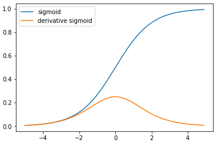

1 激活函数的作用
激活函数是用来加入非线性因素的，解决线性模型所不能解决的问题。
神经网络之所以区别于线性模型的一点就是应为它有激活函数，如一个三层神经网络模型：
$$
\begin {aligned}
y_K(x, w)& = \sigma (\sum_{j=1}^M w_{kj}^{(2)} h(\sum_{i=1}^D {w_{ji}^{(1)} x_i} + w_{j0}^{(1)}) + w_{k0}^{(2)}) \\
&= \sigma (W^{(2)} h(W^{(1)}X))
\end {aligned}
$$
其中$h$和$\sigma$分别是隐藏层和输出层的激活函数，如果没有这两个激活函数：
$$
\begin {aligned}
y_K(x, w)&= W^{(2)}W^{(1)}X \\
&=WX
\end {aligned}
$$
这不就是一个线性模型吗。所以相对于线性模型，激活函数使神经网络具有的更强大的表达能力。在一神经网络模型中：Most hidden units are distinguished from each other only by the choice of the form of the activation
function
2 常见激活函数
2.1 Sigmoid
$$
\begin {aligned}
\sigma(x)& = \frac1{1+e^x} \\
\\
\sigma’(x)& = \sigma(x) (1-\sigma(x) )
\end {aligned}
$$

sigmoid 函数将输入的实数压缩到范围[0, 1]之间。
优点：
- Sigmoid函数将输入映射在(0,1)之间，单调连续，可以用作输出层。
- 求导容易。
缺点：
具有饱和性(saturate)对参数$W$的初始值敏感， 反向传播过程易梯度消失
反向传播过程：梯度消失
sigmoid 函数将输入的实数压缩到范围[0, 1]之间，但是在函数的两端的较大范围中，sigmoid 函数的导数接近0。在backpropagation过程中需要迭代更新参数$w_{ji}$：$$
w_{ji} = w_{ji} - \alpha \frac{\partial}{\partial w_{ji}}E
$$其中：
$$
\frac{\partial E}{\partial w_{ji}} = \frac{\partial E}{\partial a_j} \frac{\partial a_j}{\partial w_{ji}} = \delta_j z_i = h’(a_j) \sum_{k=1}^K w_{kj} \delta_k z_i
$$函数$h’$是激活函数$h$的梯度，如果$h$是sigmoid函数，在函数的两端的较大范围中，$h’$接近0，从而导致$\frac{\partial E}{\partial w_{ji}}=0$ (kill gradients)，进而在迭代过程中$w_{ji}$得不到更新。
饱和性使 模型对参数$W$的初始值敏感
sigmoid 函数将输入的实数压缩到范围[0, 1]之间，但是在函数的两端的较大范围中，sigmoid函数的值是0或者1。一个神经元的前向传播为：
$$
f(a)=f(\sum_i {w_i \times x_i })
$$
在神经网络训练之前需要对参数$W$进行初始化，如果参数$W$被初始化了一个较大的值，则$a$较大，将使该神经元的输出值长时间是0或者1。
同时，在反向传播中有与$a$较大，使得$h’(a)=0$，也就产生了梯度消失现象。
Sigmoid outputs are not zero-centered. This is undesirable since neurons in later layers of processing in a Neural Network (more on this soon) would be receiving data that is not zero-centered. This has implications on the dynamics during gradient descent, because if the data coming into a neuron is always positive (e.g. $x>0$ elementwise in $f=wTx+b$), then the gradient on the weights $w$ will during backpropagation become either all be positive, or all negative (depending on the gradient of the whole expression $f$). This could introduce undesirable zig-zagging dynamics in the gradient updates for the weights. However, notice that once these gradients are added up across a batch of data the final update for the weights can have variable signs, somewhat mitigating this issue. Therefore, this is an inconvenience but it has less severe consequences compared to the saturated activation problem above.
2.2 Tanh
$$
\begin {aligned}
\tanh(x)&=\frac{\sinh(x)}{\cosh(x)}=\frac{e^x-e^{-x}}{e^x+e^{-x}} \\
\tanh(x) &=2\sigma(2x)-1 \\
\tanh’(x)&= 1-\tanh^2(x)
\end {aligned}
$$
tanh将实数值压缩到[-1, 1]之间。和sigmoid一样，tanh具有饱和性对参数$W$的初始值敏感， 反向传播过程易梯度消失的缺点。
但是tanh是以0位中心，因此，实际应用中，tanh 会比 sigmoid 更好。
2.3 ReLU
$$
f(x)=\max(0, x)
$$
在设计隐藏层时，ReLU是一个比较好的选择。
优点：
- ReLU 得到的SGD的收敛速度会比 sigmoid/tanh 快很多
- 相比于 sigmoid/tanh，计算简单。
缺点：
- 训练过程中容易存在神经元死亡现象：在某一轮反向传播过程中如果一个参数$w_{ji}$的梯度$\frac{\partial E}{\partial w_{ji}}$非常大，导致更新后$w_{ji} = w_{ji} - \alpha \frac{\partial}{\partial w_{ji}}E$ ，$w$具有一个非常大的值(正值或者负值)。则激活因子 $a_j = \sum_i w_{ji}z_i$ 可能会出负值。此下一轮的正向传播该神经元的输出值是0，反向传播该神经元所有参数$w$的梯度也是0。从而导致该神经元“dead”。
实际操作中，如果你的learning rate 很大，那么很有可能你网络中的40%的神经元都”dead”了。 当然，如果你设置了一个合适的较小的learning rate，这个问题发生的情况其实也不会太频繁。
2.4 Leaky ReLU
有一些基于ReLU的泛化的激活函数，这些激活函数的效果大部分和ReLU差不多，有的会在具体的某类任务中表现好于ReLU。这些激活函数都具有如下形式：
$$
f(x)=\max(0, x) + \alpha \min(0, x)
$$
当$\alpha = -1$时，$f(x)=|x|$。称为Absolute value rectification。好像不常用。
It is used for object recognition from images, where it makes sense to seek features that are invariant under a polarity reversal of the input illumination.
将$\alpha$值作为参数 参与神经网络模型的训练时称为parametric ReLU 或者 PReLU
当$\alpha$取一个很小的值时，如$\alpha = 0.01$，称为leaky ReLU:
$$
f(x)=\max(0, x) +0.01 \min(0, x)
$$
Leaky ReLU就是用来解决ReLU的”dead” units问题的。这里的$\alpha$是一个很小的常数。这样，即修正了数据分布，又保留了一些负轴的值，使得负轴信息不会全部丢失。
2.5 Maxout
maxout是对ReLU和leaky ReLU的泛化，其公式为：
$$
f(x) = \max(w_1^Tx+b_1,w_2^Tx+b_2)
$$
maxout具有ReLU的所有优点：ReLU 得到的SGD的收敛速度会比 sigmoid/tanh 快很多。相比于 sigmoid/tanh，计算简单。
maxout不具有ReLU的所缺点（dying ReLU）。
但是它存在两组参数，所以其参数增加为原来的两倍。
3 激活函数的选择
神经网络隐藏层的激活函数的选择是比较困难的，这个需要根绝具体的问题进行实验。
- ReLU通常是一个比较好的选择，使用ReLU时要注意学习率(learning rate)的设置，如果太大容易造成节点死亡（ “dead” units）。所以在使用过程中需要监控 “dead” units在总的节点中所占的比例
- 如果使用ReLU时“dead” units的比例较高，可以尝试Leaky ReLU 和 Maxout
- sigmoid or tanh：在ReLU出现之前神经网络主要使用sigmoid和tanh作为激活函数，由于上面说明的原因，现在已经很少用了。
其他常见激活函数请参见
参考资料
http://cs231n.github.io/neural-networks-1/
Deep Leaning
Pattern Recognition and Machine Learning